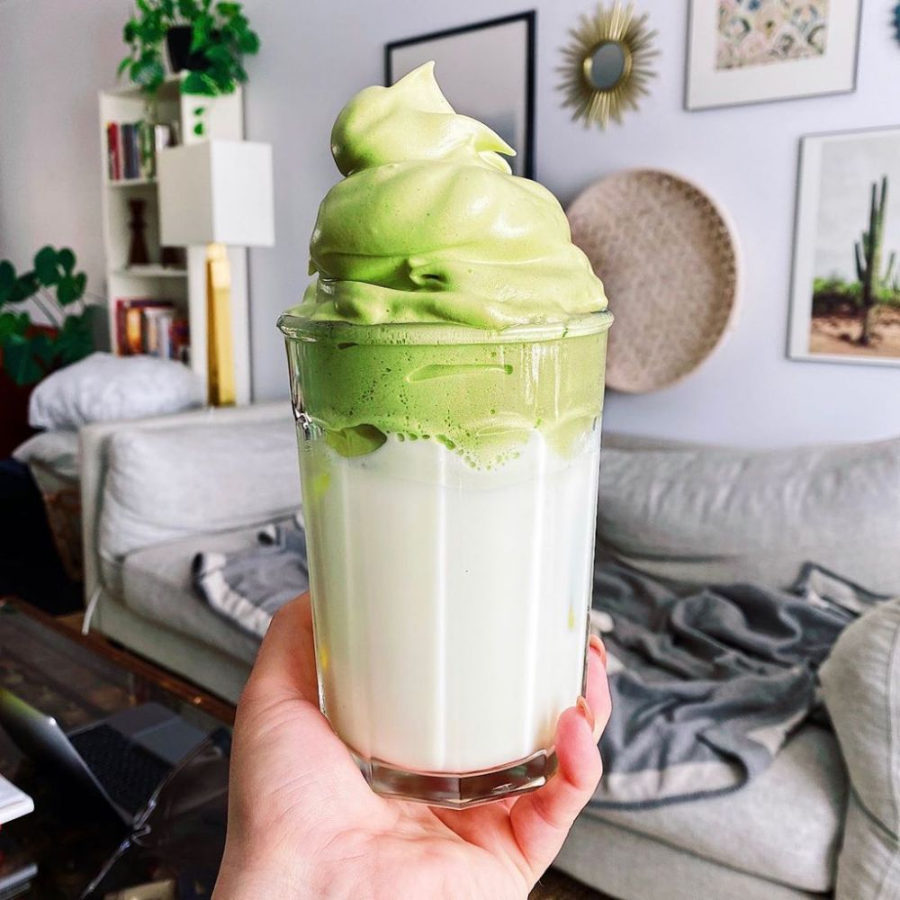

resep membuat Dalgona
Kamu bisa menikmati Dalgona yang nikmat dengan resep Dalgona sederhana ini.
Bahan-bahan :
- susu UHT
- es batu
Bahan Dalgona :
- 1 sdm bubuk greentea (matcha)
- 2 sdm air hangat
- 2 sdm gula pasir
- 2 sdm whipped cream
- Campur dan kocok matcha gula dan air.
- Masukkan cream, aduk memutar sampai mengental, sisihkan.
- Siapkan susu dan es di gelas, tuangkan dalgona di atas susu.